Compute various normalization methods on a count matrix
normalize_count_matrix.RdGiven a matrix of gene counts and a grouping factor identifying the group membership for each column calculate normalized expression values using a variety of gene expression normalization techniques.
normalize_count_matrix(
x,
groups,
filter = TRUE,
min_count = 10,
min_total_count = 15,
large_n = 10,
min_prop = 0.7,
ref_column = NULL,
log_ratio_trim = 0.3,
sum_trim = 0.05,
do_weighting = TRUE,
acutoff = -1e+10,
p = 0.75,
n_sub = 1000,
fit_type = c("parametric", "local", "mean", "glmGamPoi"),
batch = NULL,
norm_factors = NULL,
window = 0.05,
control_genes = NULL,
k = 1,
drop = 0,
center = TRUE,
round = TRUE,
epsilon = TRUE,
tolerance = 1e-08
)Arguments
- x
SummarizedExperimentobject containing a counts assay with raw counts or a matrix with features as rows and samples as columns.- groups
a group level continuous or categorial covariate associated with each sample or column in the object. The order of
groupsmust match the order of the columns in object.- filter
Should the lowly expressed genes be removed prior to normalization? Uses the
filterByExprfunction in theedgeRpackage. Default = TRUE.- min_count
Passed to
edgeR::filterByExprthe minimum count required for at least some samples. Default 10.- min_total_count
Passed to
edgeR::filterByExprthe minimum total count required. Default 15.- large_n
Passed to
edgeR::filterByExprthe number of samples per group that is considered to be "large". Default 10.- min_prop
Passed to
edgeR::filterByExprthe minimum proportion of samples in the smallest group that express the gene. Default 0.7.- ref_column
Column to use as reference for method = "TMM". Can be a column number or a numeric vector of length nrow(object). Default = NULL. Used by
edgeR::calcNormFactors- log_ratio_trim
The fraction (0 to 0.5) of observations to be trimmed from each tail of the distribution of log-ratios (M-values) before computing the mean. Used by method="TMM" for each pair of samples. Default = 0.3. Used by
edgeR::calcNormFactors- sum_trim
The fraction (0 to 0.5) of observations to be trimmed from each tail of the distribution of A-values before computing the mean. Used by method="TMM" for each pair of samples. Default = 0.05. Used by
edgeR::calcNormFactors- do_weighting
Logical, whether to use (asymptotic binomial precision) weights when computing the mean M-values. Used by method="TMM" for each pair of samples. Default = TRUE. Used by
edgeR::calcNormFactors- acutoff
Minimum cutoff applied to A-values. Count pairs with lower A-values are ignored. Used by method="TMM" for each pair of samples. Default = -1e10. Used by
edgeR::calcNormFactors- p
Numeric value between 0 and 1 specifying which quantile of the counts should be used by method="upperquartile". Default = 0.75. Used by
edgeR::calcNormFactors- n_sub
The number of genes to subset. Default = 1000. Used by
DESeq2::vst- fit_type
either "parametric", "local", "mean", or "glmGamPoi" for the type of fitting of dispersions to the mean intensity. Used by
DESeq2::vst. Default = "parametric"- norm_factors
Optional normalization scaling factors. Used by
qsmooth::qsmooth- window
window size for running median which is a fraction of the number of rows in object. Default is 0.05. Used by
qsmooth::qsmooth- control_genes
A character, logical, or numeric vector indicating the subset of genes to be used as negative controls in the estimation of the factors of unwanted variation. Used by
RUVseq::RUVg. Default = NULL.- k
The number of factors of unwanted variation to be estimated from the data. Used by
RUVseq::RUVg. Default = 2.- drop
The number of singular values to drop in the estimation of the factors of unwanted variation. This number is usually zero, but might be set to one if the first singular value captures the effect of interest. It must be less than k. Used by
RUVseq::RUVg. Default = 0.- center
If TRUE, the counts are centered, for each gene, to have mean zero across samples. This is important to ensure that the first singular value does not capture the average gene expression. Used by
RUVseq::RUVg. Default = TRUE.- round
If TRUE, the normalized measures are rounded to form pseudo-counts. Used by
RUVseq::RUVg. Default = TRUE.- epsilon
A small constant (usually no larger than one) to be added to the counts prior to the log transformation to avoid problems with log(0). Used by
RUVseq::RUVg. Default = 1.- tolerance
Tolerance in the selection of the number of positive singular values, i.e., a singular value must be larger than tolerance to be considered positive. Used by
RUVseq::RUVg. Default = 1e-08.- batch.
(Optional) batch covariate (multiple batches are not allowed). If batch covariate is provided, Combat() from sva is used prior to qsmooth normalization to remove batch effects. See Combat() for more details. Used by
qsmooth::qsmooth
Value
List with items containing matrices of normalized log count per million values for each normalization method along with the log-scaled original counts.
Details
The following normalization methods are computed
"TMM" Trimmed Mean of M-values computed by
edgeR::calcNormFactors"RLE" Relative log expression computed by
edgeR::calcNormFactors"UQ" Upper Quartile normalization computed by
edgeR::calcNormFactors"VST" Variance Stabalizing Transformation computed by
DESeq2::vst"QSmooth" Smoothed Quantile Normalization computed by
qsmooth::qsmooth"RUVg" Remove Unwanted Variation using control genes by
RUVseq::RUVg"Total Count" Library Size Normalization only
The function returns a list with the log count per million normalized values
for each of the above methods. The log2 scaled original counts are also returned.
For all methods except vst, a pseudocount of 2 is added to avoid taking
logs of 0.
Examples
library(coriell)
# Simulate count matrix with differential expression
sim <- simulate_counts(n_genes = 10000, n_up = 5000, n_down = 500, count_offset = 25)
# Extract 1000 non-DE control genes for RUVg method
controls <- setdiff(rownames(sim$table), union(sim$up_genes, sim$down_genes))
controls <- sample(controls, 1000, replace = FALSE)
# Define grouping factor
Group <- factor(rep(c("Control", "Treatment"), each = 3))
# Run all normalization methods
normed <- normalize_count_matrix(x = sim$table, groups = Group, control_genes = controls)
#> converting counts to integer mode
#> -- note: fitType='parametric', but the dispersion trend was not well captured by the
#> function: y = a/x + b, and a local regression fit was automatically substituted.
#> specify fitType='local' or 'mean' to avoid this message next time.
#> Some control genes have been dropped in the filtering step. Using the set of control genes present after filtering
# View the normalized distributions for each
for (method in names(normed)) boxplot(normed[[method]], main = method)
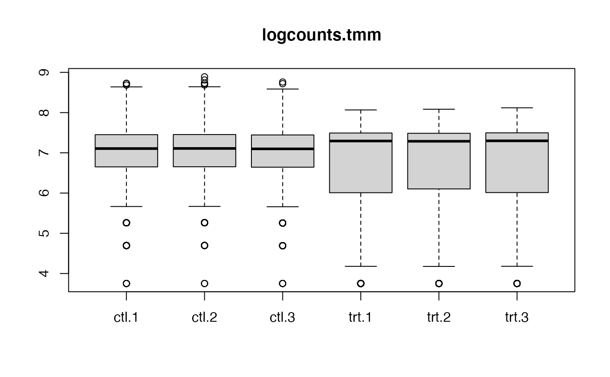
 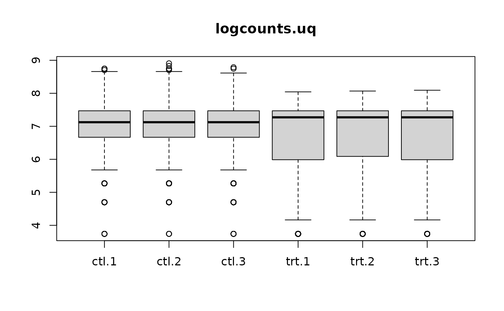
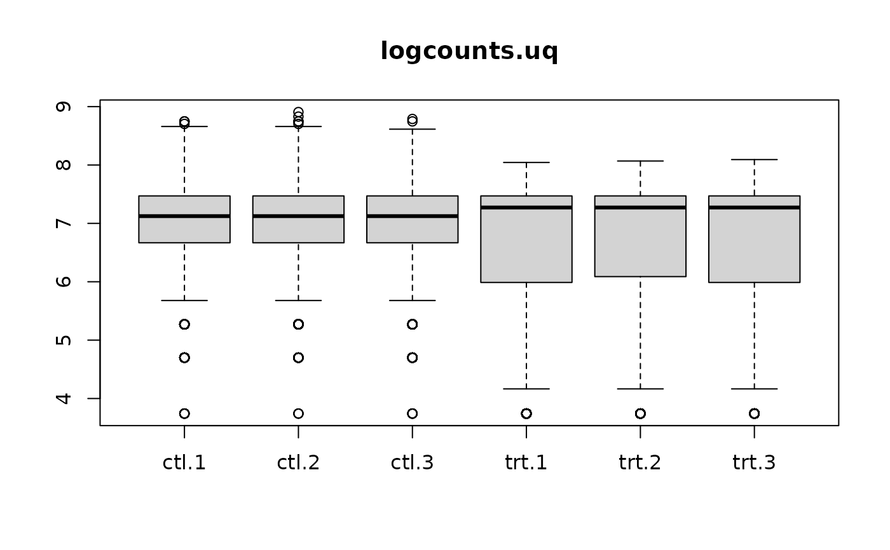
 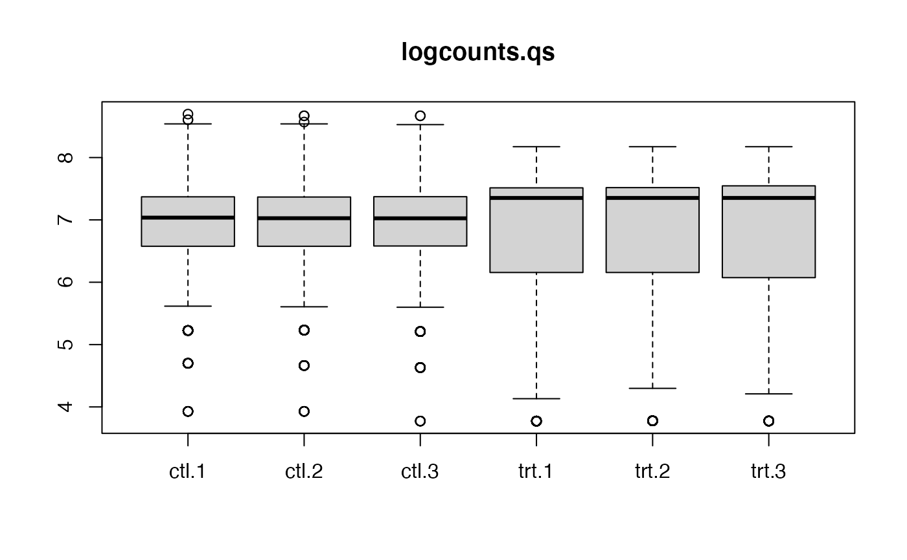
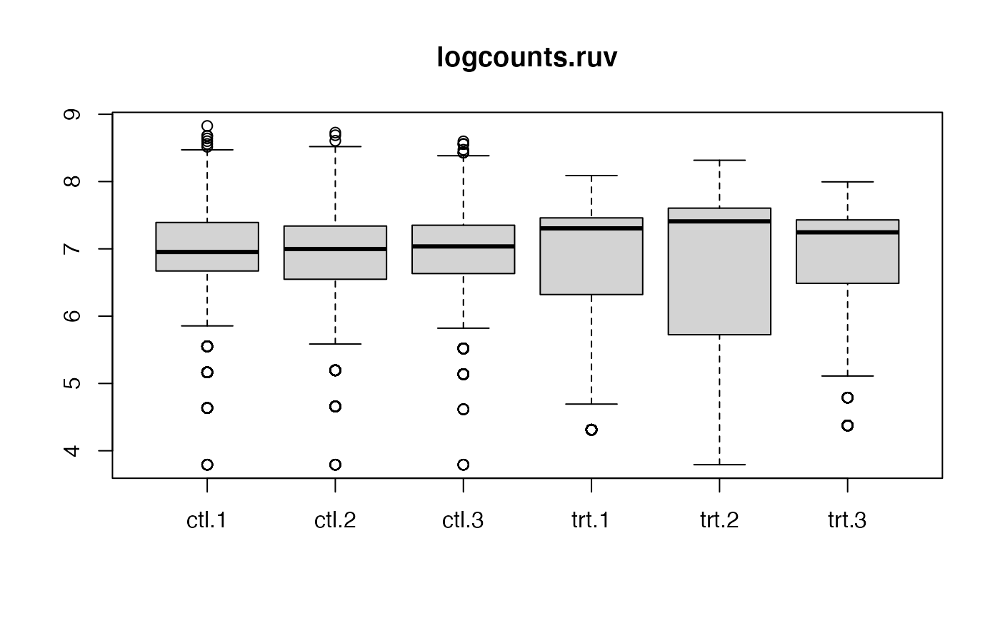
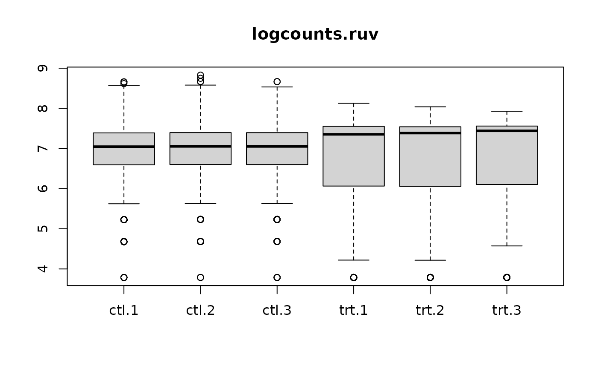
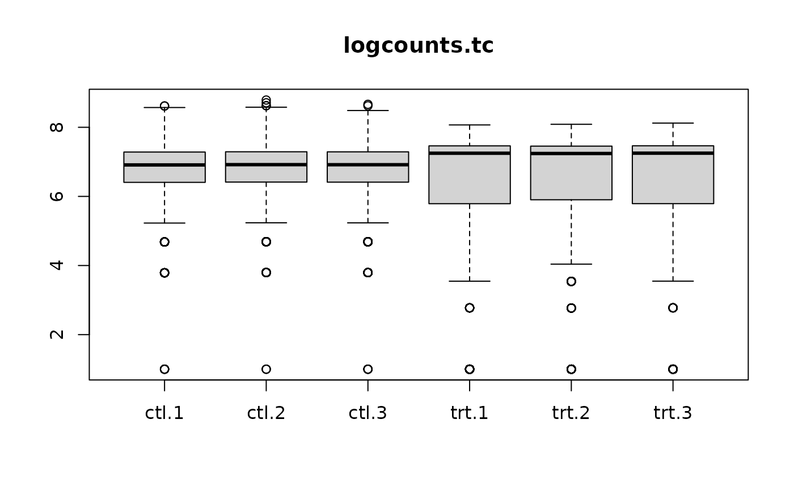
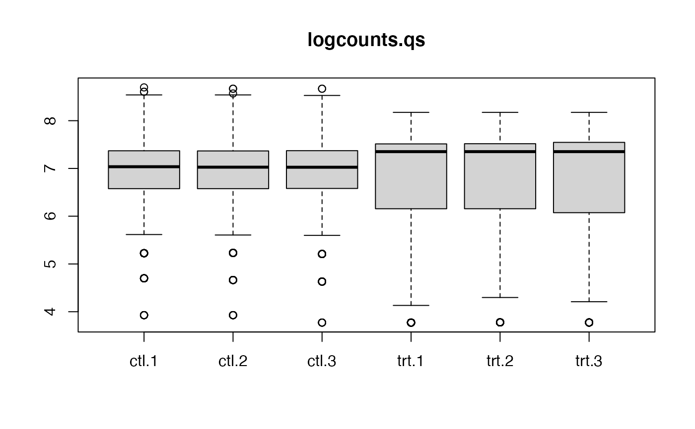
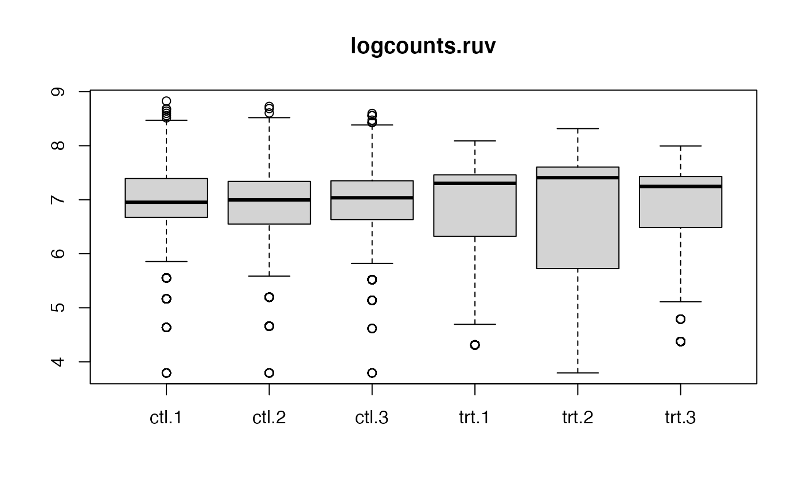
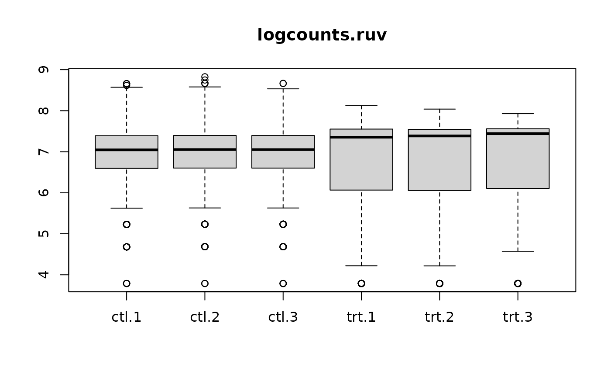
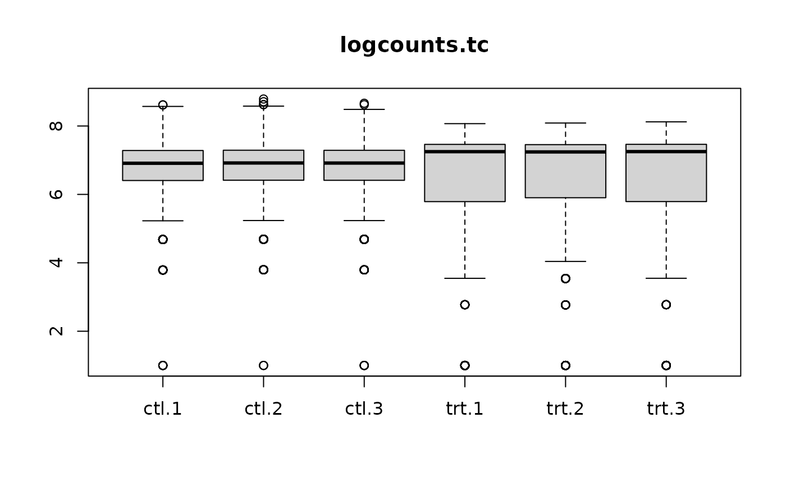